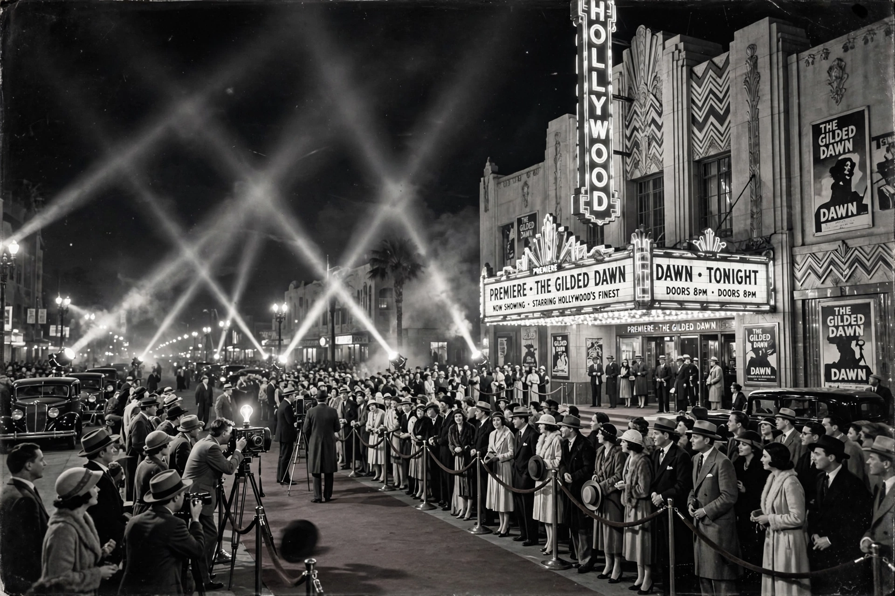

The Golden Age of Hollywood was the period in the history of American cinema roughly spanning from the late 1920s, with the arrival of sound films, to the early 1960s. It was defined by the dominance of the studio system, in which a handful of major studios controlled production, distribution and exhibition, and by a stable of contracted stars whose images were carefully manufactured and marketed worldwide.

The Hollywood Sign, emblem of the studio era.
| Golden Age of Hollywood | |
| Years | c. 1927 - early 1960s |
|---|---|
| Country | United States |
| Major studios | MGM, Paramount, Warner Bros., 20th Century Fox, RKO |
| Key genres | Musicals, film noir, westerns, screwball comedy, melodrama |
| Landmarks | Sound (1927), Hays Code enforcement (1934), Paramount Decrees (1948) |
Five major studios - Metro-Goldwyn-Mayer, Paramount Pictures, Warner Bros., 20th Century Fox and RKO Radio Pictures - together with the "Little Three" minors (Universal, Columbia and United Artists) owned or controlled the theatre chains that showed their films. Actors, directors and writers worked under long-term contracts, and stars such as Clark Gable, Humphrey Bogart, Katharine Hepburn, Judy Garland and Errol Flynn became global celebrities.
The success of The Jazz Singer (1927) ended the silent era almost overnight. The mature "classical Hollywood" style emphasised invisible editing, continuity, clear cause-and-effect plotting and star-centred narratives. Technical innovations, including Technicolor and widescreen processes such as CinemaScope (from 1953), repeatedly refreshed the theatrical experience.
From 1934 the Motion Picture Production Code, administered by Joseph Breen, strictly censored on-screen content: crime could not pay, sexuality was heavily restricted, and authority figures had to be treated respectfully. The Code shaped the era's characteristic innuendo-laden dialogue and remained influential until it was replaced by the MPAA ratings system in 1968.
The 1948 Supreme Court decision in United States v. Paramount Pictures forced the majors to divest their theatre chains, breaking vertical integration. Simultaneously, television spread into American homes, suburbanisation drew audiences away from downtown cinemas, and independent production grew. By the early 1960s the contract-star system had largely dissolved, giving way to the New Hollywood era.
Films of the period - Casablanca (1942), Gone with the Wind (1939), It's a Wonderful Life (1946), Singin' in the Rain (1952) - remain canonical, and the period's glamour continues to define popular conceptions of "Hollywood".